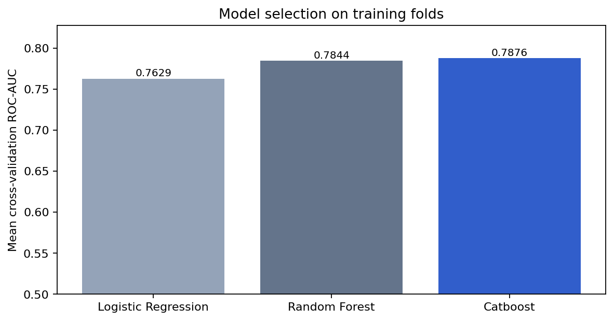

The candidates
The active script compares exactly three model families: logistic regression, random forest, and CatBoost. It does not train XGBoost, LightGBM, support-vector machines, K-nearest neighbours, naïve Bayes, or neural networks. They are reasonable alternatives, but they were not evaluated by this repository.
| Model | Intuition | Reason to include |
|---|---|---|
| Logistic regression | Weighted feature sum becomes a probability through an S-shaped sigmoid curve. | Fast, interpretable baseline. |
| Random forest | Many varied decision trees vote by averaging probabilities. | Handles nonlinear patterns and interactions. |
| CatBoost | Small trees are added in sequence to correct earlier errors. | Strong gradient-boosting family for structured data. |
Logistic regression
It calculates z = b + w₁x₁ + w₂x₂ + …, then applies 1 / (1 + e⁻ᶻ). Learned positive weights raise probability and negative weights lower it, holding other features fixed. It is easier to explain, but raw linear relationships can miss complex interactions unless features supply them.
Random forest
A decision tree repeatedly asks questions such as “is utilisation above this split?” A single deep tree can memorise quirks. A forest creates many deliberately different trees using sampled rows/features, then averages them. That reduces variance, though it is harder to turn into one simple explanation.
CatBoost
Boosting builds a sequence of corrections. A first shallow tree is rough. A later tree learns useful patterns in its errors. iterations controls how many rounds occur, depth controls tree complexity, learning_rate controls each correction's size, and l2_leaf_reg discourages overly flexible leaf values.
Which one won?
CatBoost had the highest cross-validated ROC-AUC: 0.7876, compared with 0.7844 for random forest and 0.7629 for logistic regression. Its average precision was 0.5645. The selected configuration has depth 6, 150 iterations, learning rate 0.03, and L2 regularisation 3. These are selected settings for this search, not universally best numbers.

Why not choose highest accuracy?
Because the majority class dominates. The search refits on ROC-AUC and also records average precision/F1 so ranking and positive-class performance stay visible.